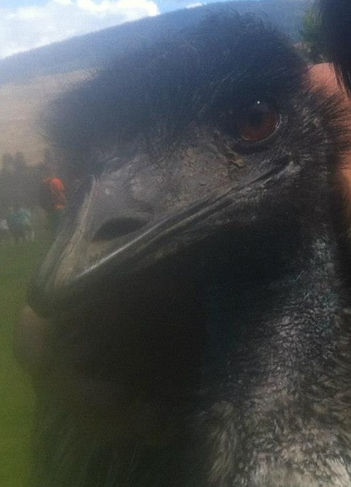

Henry Zhang
Starting out small, Henry Zhang is a guy that tries his best on everything. Although he was born in China, he can be adaptable on every single places he met. He settled in Coquitlam in the Greater Vancouver Area for now. He changed from year 2 Biology major from UBC to CST just because he knew that computer will be his thing, and it will make him more active towards computer technologies. He hopes that he will get into software and gaming industry after his studies in the CST program.
Henry can be reached at henryzisgood@gmail.com